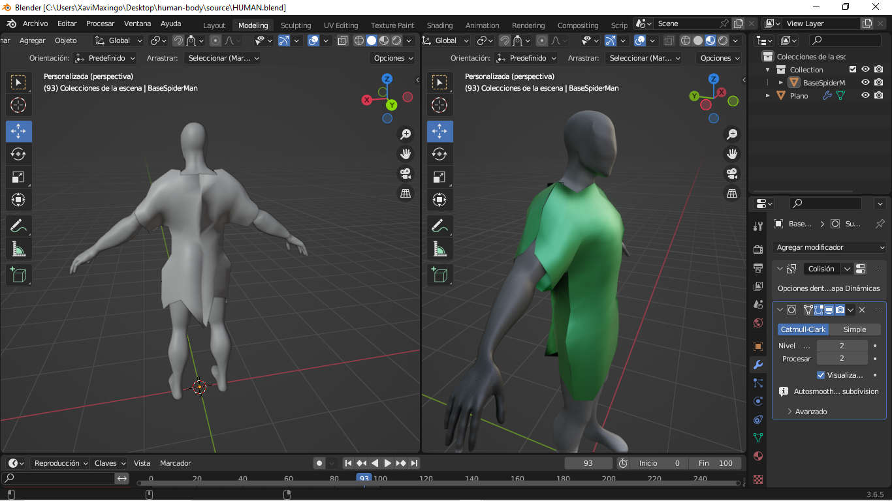
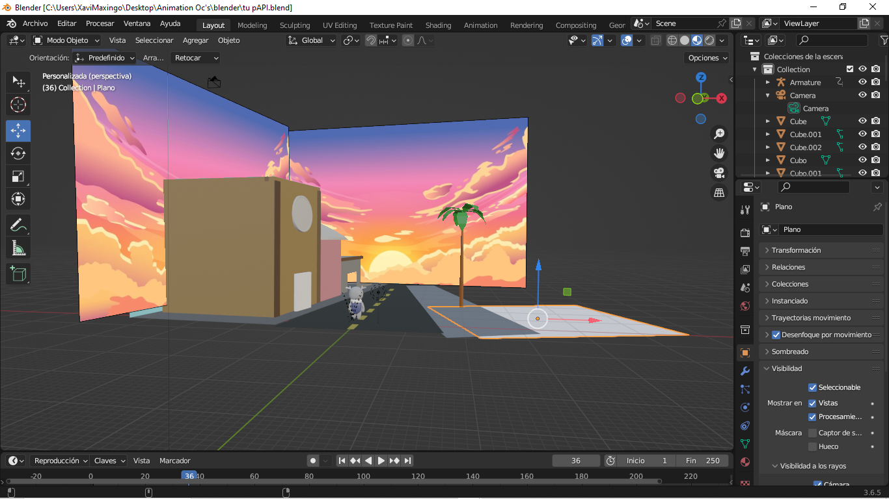
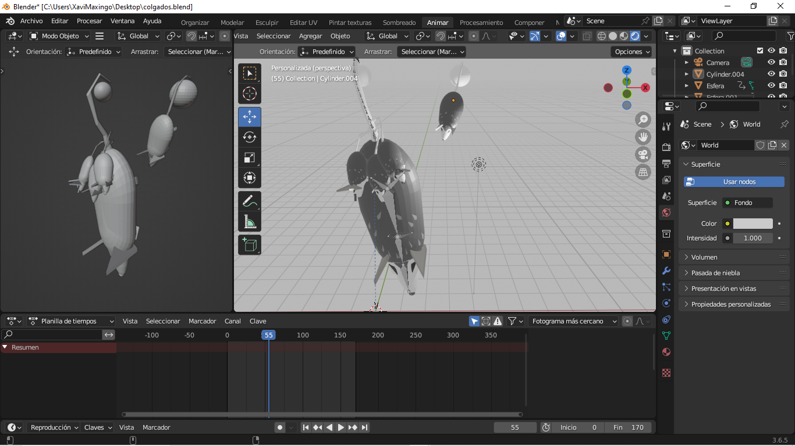
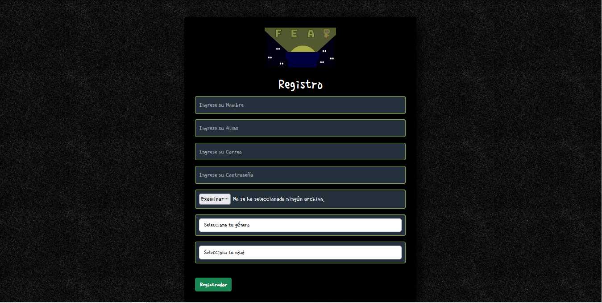
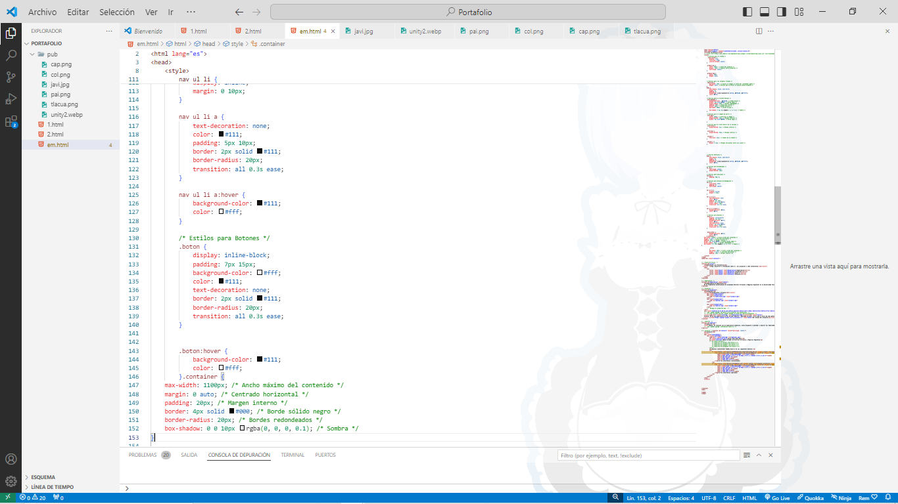
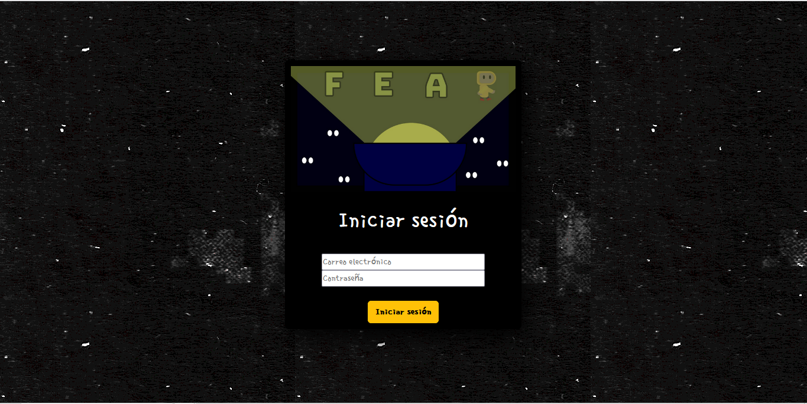
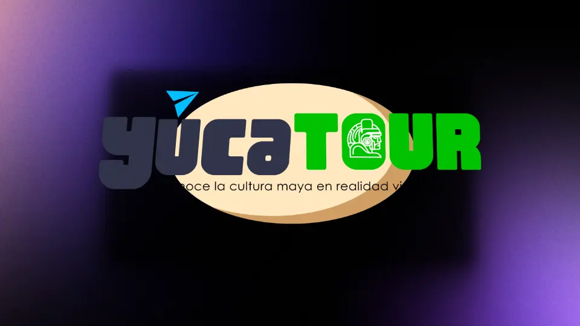
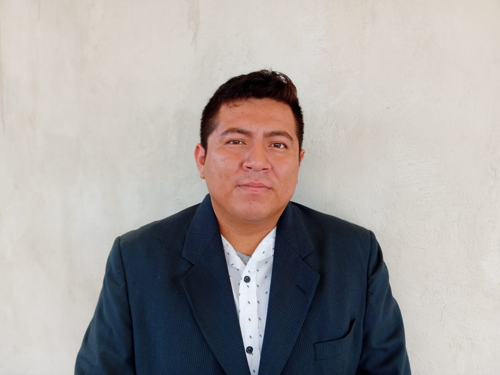

Aquí encontrarás información sobre mí, mis proyectos y cómo contactarme.
Experiencia en Desarrollo
En mi trayectoria universitaria he estudiado Entornos Virtuales y Negocios Digitales en la Universidad Tecnológica Metropolitana. Además, he participado en actividades extracurriculares relevantes y realizado colaboraciones en el área de Realidad Virtual Y Realidad Aumentada. Estas experiencias han fortalecido mis habilidades y me han preparado para enfrentar los desafíos profesionales con confianza. Estoy emocionado por continuar creciendo y aprendiendo en mi trayectoria universitaria y estoy seguro de que mi formación académica y experiencias me han preparado bien para enfrentar los desafíos futuros en mi carrera.
Proyectos
Animaciones y Diseños
(Personajes 3D y Paginas web)
Ropa Ecenarios y Animaciones



Este segmento de mi portafolio abarca una variedad de creaciones en el mundo de la animación y el diseño. Desde la conceptualización de personajes en 3D hasta la creación de cautivadoras animaciones, este conjunto de trabajos refleja mi pasión por dar vida a ideas a través del movimiento y la creatividad visual. Explora un universo de ropajes, escenarios y animaciones que te transportarán a mundos imaginarios y experiencias visuales únicas.
Diseño de paginas web
(Estilos y Vistas)



Proyectos de Animación y Diseño
Este segmento de mi portafolio se centra en la creación de experiencias visuales cautivadoras a través del diseño de páginas web animadas. Desde la conceptualización de interfaces hasta la implementación de elementos dinámicos, estos trabajos reflejan mi dedicación a crear sitios web que no solo sean funcionales, sino también visualmente atractivos y memorables. Explora un universo de diseño web donde cada página cuenta una historia única y ofrece una experiencia interactiva para los usuarios.
Aprendiendo nuevas Tecnologías
Actualmente estoy explorando tecnologías en las que confío tendrán un gran impacto a largo plazo.

YucaTour VR es una experiencia en VR (Virtual Reality / Realidad Virtual), en el que a través de unas gafas VR, podrás explorar dos de las más hermosas zonas arqueológicas de Yucatán (Kabah y Uxmal), al igual que interactuar con los personajes y los carteles que te contarán una asombrosa leyenda.
Bueno, en relación con mi experiencia académica, estoy dispuesto a aprender y mejorar mis habilidades en cualquier área que se necesite. Si tengo experiencia previa en el tema, puedo contribuir con nuevas perspectivas y enriquecer las propuestas desde ángulos diferentes. Mi objetivo es seguir desarrollándome y adaptándome constantemente para enfrentar cualquier desafío que surja.
Contacto

Javier Pool Rodríguez
Desarrollador de Entornos Virtuales y Negocios Digitales
¿Quieres contactarme? Puedes hacerlo de las siguientes maneras: